Mapping Elements Inside Lists
|
DataMapper will continue to be fully supported in all current and future versions of Mule ESB 3.x, however it will be removed in Mule 4.0 in favour of the Transform Message component (based on DataWeave code). We recommend that if you wish to take advantage of the new capabilities of DataWeave or if you start new projects, upgrade now. A migration tool is now included in Studio, which assists in converting a DataMapper map to DataWeave. Right click on a DataMapper, select Migrate to DataWeave, and follow the instructions.
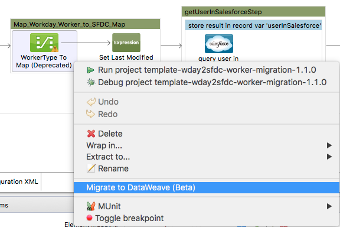
If you don’t see DataMapper on your palette, you can enable it by going to Preferences → Anypoint Studio → Palette Profiles and ticking the checkbox Show deprecated Mule Components and Attributes. |
A collection groups data items together in one message payload. Anypoint DataMapper supports complex mapping and transformation operations, including those where the input and output are complex nested structures of different data formats.
Before mapping elements in a list, you must first map the list itself to an output object or list. Once the input list maps to the output object or list, you can map its individual child elements.
Creating a series of element mappings that map input lists to output lists, and then map their child elements, you can ultimately map data elements at any level in complex structures, working your way down through nesting levels in the input and the output.
This document uses two examples to demonstrate how to map elements inside lists:
-
Mapping Nested Lists to a Flat File (XML to CSV)
-
Mapping Nested Lists to a Structured Data File (XML to JSON)
Both examples require sequential completion of the following high-level tasks:
-
Creating the sample input file
-
Creating the sample output file
-
Adding Anypoint DataMapper to a flow
-
Mapping the data
Mapping Nested Lists to a Flat File Format (XML to CSV)
Creating the Sample XML Input File
-
Create a new text file in a text editor, then paste into it the following contents:
<contact_list type="members" id="id0"> <contacts> <user name="John" lastname="Harrison" phone="1111 1111"/> <user name="Jane" lastname="Doe" phone="2222 2222"/> <user name="Harry" lastname="Hausen" phone="3333 3333"/> </contacts> <emergency_contacts> <user name="Larry" lastname="Larson" phone="4444 4444"/> <user name="Harry" lastname="Harrison" phone="5555 5555"/> <user name="John" lastname="Johnson" phone="6666 6666"/> </emergency_contacts> </contact_list> -
Save the file to a convenient location under a useful descriptive name, such as
InputList.xml. This serves as the input XML file for both examples.
Creating the Sample CSV Output File
-
Create another new text file, then paste into it the following contents:
Name,Lastname,Phone -
Save the file in a convenient location under a useful name, such as
Output.csvThis simple CSV file provides DataMapper with the output data fields. You can modify these fields when configuring the DataMapper building block.
Adding DataMapper to a Flow
The following procedure offers abbreviated steps for adding a DataMapper to a flow. For detailed instructions, consult the DataMapper User Guide and Reference.
-
From the Transformers group in the Palette, drag a DataMapper building block to the location where it can receive its input, – such as to the right of a File connector.
-
Click the DataMapper icon to open its Properties Editor.
-
In the Input section of the the Properties Editor, use the drop-down menu next to the Type field to select XML.
-
In the Output section, use the drop-down menu next to the Type field to select CSV.
-
In the Output section, click the ellipsis (…) button next to the CSV field.
-
Use the file browser to select the CSV output file you created.
-
Click Create Mapping to load the configurations into the DataMapper Console (see image below).
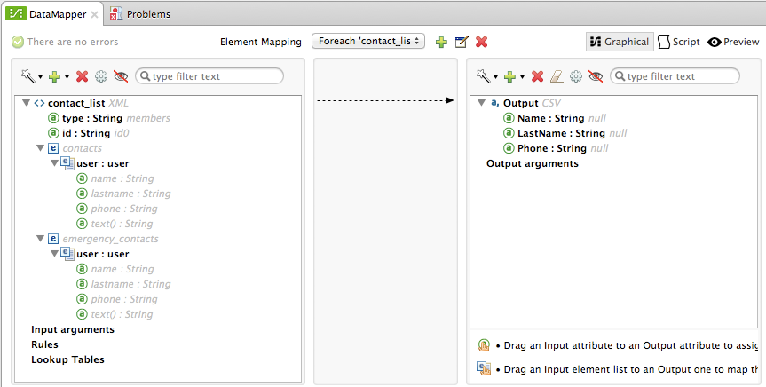
The Element Mapping selector (center) shows the initial element mapping, called ForEach 'contact_list' → 'output.
The Input pane on the left-hand side displays the input XML file’s root element, contact_list. A dotted line connects contact_list to the csv root element in the Output pane. This dotted line indicates that for each nested element in contact_list that is mapped in a child element mapping, DataMapper should create an entry in csv.
The Output pane on the right-hand side displays a list of output elements. The top item represents the csv output file, which can be understood as a list of rows, each of which contains the individual fields Name, LastName and Phone. In this case, there are no nested lists in the output, since the output format is flat.
Mapping the Data
In the input pane, attributes are identified by the icon. Additionally, the names of mappable attributes are highlighted in bold.
To map the attributes, follow these steps:
-
Hover your mouse over a mappable input attribute. Mule displays a tooltip hinting that the attribute is mappable:
-
For this example, click, then drag the
userelement underemergency_contactsfrom the input pane to theOutputroot element in the output pane. DataMapper will:-
Create a new element mapping called
Foreach 'user' → 'Output'. This maps the nested listemergency_contacts/userto the root element of the CSV, calledOutput -
Map all the individual fields under
userto fields with matching names in the CSV
Display all the arrows reflecting these new mappings, as shown below: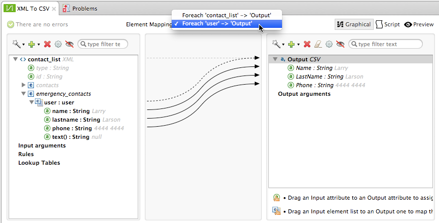Note that the other nested list in the input XML file —
contacts— also contains auserelement, but this one is not mapped.
-
Running a Preview of the Mapping
| For a complete description of DataMapper’s Preview feature, see Previewing DataMapper Results on Sample Data. |
To preview the behavior of the mapping without running your entire mapping flow, click the Preview located above the output pane. DataMapper displays the preview view. In the Input Data field, enter the path to your input file (or use the folder button to select the file). Then, click  to preview the output.
to preview the output.
As a result of the emergency_contacts mapping, the CSV output includes rows corresponding to the emergency_contacts list. There is no mapping for the contacts list, so the output CSV contains no lines for the elements in that list.
Printing CSV Headers
By default, the output does not include the CSV headers. To print CSV headers, follow these steps:
-
In the output pane of the graphical mapping editor, click the Properties icon, highlighted below.
-
DataMapper displays the CSV Properties window. Click Print headers, then click OK.
DataMapper will print the CSV headers in the first line of output.
Mapping Nested Lists to Structured Format (XML to JSON)
This example uses DataMapper to map data from XML to JSON. The latter supports simple data structures and associative arrays (which use keys and values roughly as XML uses attribute names and attribute values). This example shows how one representation of structured data can be converted to another.
Creating the Sample XML Input File
If you haven’t already created a sample XML file, complete the steps in the Mapping Nested Lists to a Flat File Format (XML to CSV).
Creating the JSON Output Fields
There are two ways to create the JSON output fields:
-
Create a sample JSON file and instruct DataMapper to generate output fields from it
-
Automatically create the output fields from the input
To fully follow through with this example, you will need to create a sample JSON file as described below. The file provided in this example is intentionally incomplete; the process of adding the missing output fields will help you to become familiar with working with mapping levels via DataMapper’s graphical mapping editor.
To learn how to automatically create the output structure and mappings from an input file, see Automatically Creating the JSON Output Fields.
Creating the Sample JSON Output File
-
Create a new file in a text editor, then paste into it the following contents:
{ "type": "members", "id": "id0", "contacts": [ { "name": "", "lastname": "" }, { "name": "", "lastname": "" }, ], "emergencyContacts": [ { "name": "", "lastname": "" }, ] } -
Save the file to a convenient location under a useful descriptive name. This JSON file provides DataMapper with the output data fields.
Adding DataMapper to a Flow
-
Drag a DataMapper transformer to your flow.
-
Click the DataMapper icon in the canvas to open its Properties Editor.
-
In the Input pane, use the drop-down menu next to the Type field to select XML.
-
Click Generate schema from xml.
-
Click the ellipsis (…) button to navigate to and select the XML file you created for DataMapper input. (If you’ve completed the previous example, DataMapper will ask if you want to overwrite the XML schema file. It is safe to overwrite it; click OK.)
-
In the Output section of the Properties Editor, use the drop-down menu next to the Type field to select JSON.
-
In the Output section, click the ellipsis symbol (…) next to the Json sample field.
-
Navigate to and select the JSON file you created.
-
Click Create mapping. The DataMapper graphical editor should look like the image below.
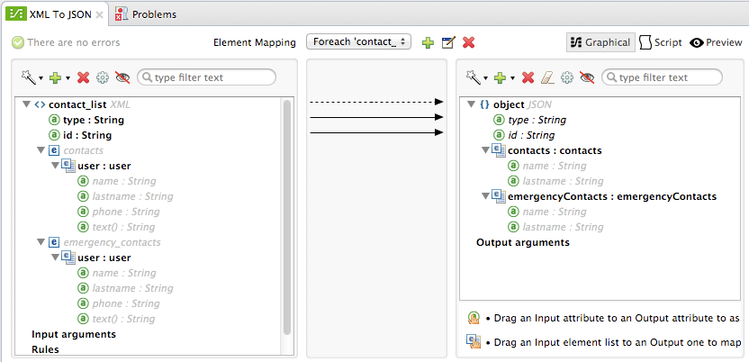
In the screenshot above, the Output pane contains two nested lists: contacts and emergencyContacts. Mule read the names of these lists from the sample JSON file.
The input field phone is missing in the output. This is because the JSON file used to generate the output fields did not contain the field phone. We will add this missing field in the example below.
Note that the child elements of each list — both in the input pane and in the output pane — are greyed out. Before you can map individual list elements to each other, you must first map the lists (displayed in bold type) themselves.
Mapping the Data
To map the input to the output data, follow these steps:
-
Click, then drag the
user : userelement underemergencyContactsin the Input pane to the `emergencyContacts: emergencyContacts `element in the Output pane. DataMapper will:-
Create a new element mapping the
emergency_contacts/userlist in the XML input to theobject/emergencyContactslist in the JSON output. You can view the new mapping using the Element Mapping drop-down menu: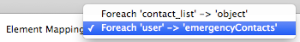 -
Auto-map all children of
emergency_contacts/userthat have matching names to children ofemergencyContacts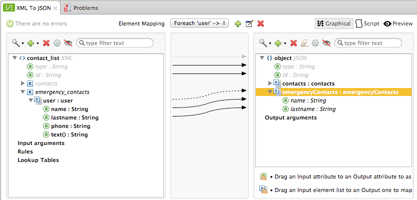
-
-
Notice that the DataMapper mapped
nameandlastname, but notphone. This is because the sample JSON file does not contain a field or attribute calledphone. To include phone numbers for the emergency contacts, create a new attribute forphone, then drag and drop to map thephoneinput attribute to the new output attribute.Adding a new metadata field
Complete the following steps to create the new field in the output pane.
-
In the output pane, right-click the
emergencyContactslist, then select Add Metadata Field.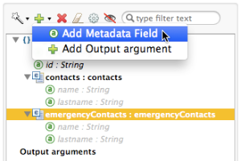 -
Fill in the New Attribute dialog:
-
For Type, select Attribute.
-
For Name field of the New Attribute window, type the name of the attribute.
-
For Configuration → Type, select string.
-
-
Click OK. The new
phoneattribute is created in the JSON output file.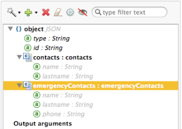 -
Click the
phoneelement in the input pane, then drag it to the newly-createdphonekey in the output pane.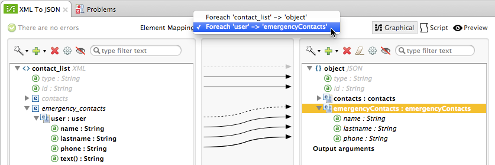
-
-
The next step is to map the
contactselement in the XML to its counterpart in the JSON.In order to map the
contactsitems, first we must select the element mapping between their parents – in this case, the “Foreach 'contact_list' to 'object'” element mapping. Use the Element Mapping control to make this selection: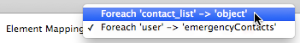The mapping editor updates to focus on this mapping:
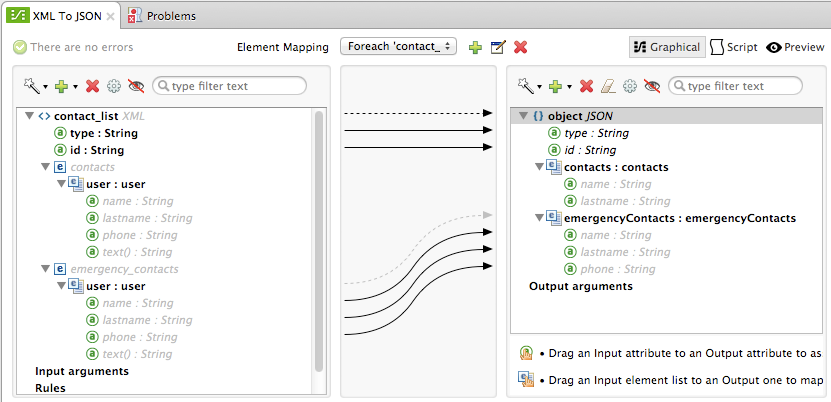When you initially configured DataMapper, it automatically created the top level
Foreach 'contact_list' → 'object'. This level maps the XML input file<contact_list type="members" id="id0">to the JSON output file:{ "type" : "members", "id" : "id0", [...] }To map these elements in DataMapper, click the
contacts/userlist in the Input pane (identified as user : user), then drag it to thecontactsoutput list in the Output pane. DataMapper will:-
Add a new mapping called
Foreach 'user' → 'contacts', which you can see in the Element Mapping drop-down menu -
Map the input fields under
userto their matching output fields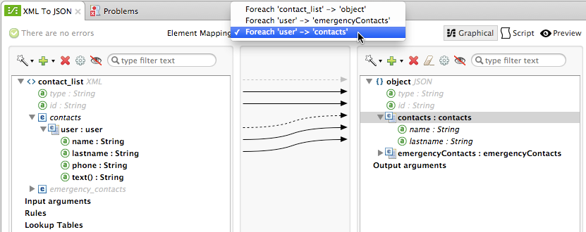
-
Notice that this new mapping level does not have an output field to match the input field phone. Use the procedure described above to create a new output field called phone. Then, drag-and-drop the input field phone to the new field to complete the mapping.
At this point, you have mapped all of the XML input fields to their corresponding JSON output fields. The final DataMapper view should look like the image below. You can check each of the element mappings to see if they match.
The output of the mapping should be the following:
{
"type" : "members",
"id" : "id0",
"contacts" : [ {
"name" : "John",
"lastname" : "Harrison",
"phone" : "1111 1111"
}, {
"name" : "Jane",
"lastname" : "Doe",
"phone" : "2222 2222"
}, {
"name" : "Harry",
"lastname" : "Hausen",
"phone" : "3333 3333"
} ],
"emergencyContacts" : [ {
"name" : "Larry",
"phone" : "4444 4444",
"lastname" : "Larson"
}, {
"name" : "Harry",
"phone" : "5555 5555",
"lastname" : "Harrison"
}, {
"name" : "John",
"phone" : "6666 6666",
"lastname" : "Johnson"
} ]
}| To generate a preview of your mapping, click the Preview tab in the DataMapper view, then click Run Mapping. Consult Previewing DataMapper Results on Sample Data for details. |
Automatically Creating the JSON Output Fields
Often, the quickest and easiest way to create output fields is to use DataMapper’s From Input feature when you initially configure DataMapper. This feature automatically creates output fields matching the names of the input fields, and maps matching fields accordingly.
To create the JSON output fields used in the example above, follow these steps:
-
Create the sample XML input file as described Mapping Nested Lists to a Flat File Format (XML to CSV).
-
In DataMapper’s Output pane, select JSON from the Type drop-down menu. DataMapper should look like the image below.
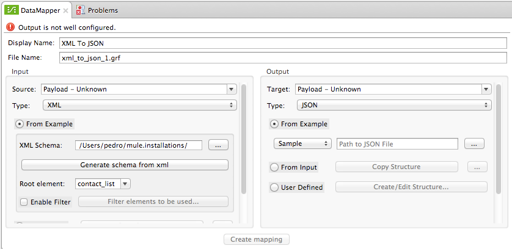 -
Click the From Input radio button.
-
Click the Copy Structure button.
-
Click Create mapping. DataMapper displays its graphical mapping editor, which should look like the image below.
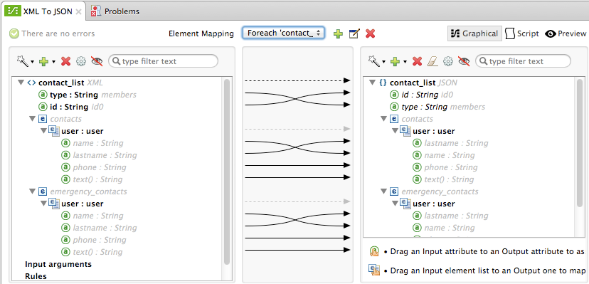DataMapper has automatically:
-
Created a JSON output structure and fields matching the XML input file
-
Created different mapping levels, one for each level in the nested lists
-
Mapped the matching input and output fields
-
You can also use the Infer Metadata tool to automatically update or recreate output metadata. For details, see Updating Metadata in an Existing Mapping.